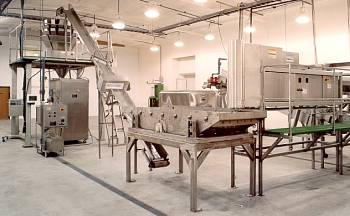

A rapid cut above the rest

Mr. Chips can provide you with a steady supply of fresh pickle chips, cubes and relish made with our own house recipe or to your exact recipe formulation. All are made to the same exacting standards of quality that have made Bay View one of the Midwest's premier processors of pickle products.
Cubed Pickle Relish
Standard Stock
Cut style:
Cubed
Cut Size:
1/8" x 1/8" x 1/4"
Flavor:
Specially formulated dill and sweet relish house blend
Packaging:
5-gallon plastic pail
Customizable Capabilities
Cut sizes:
The high capacity Urschel RA-A can cut cubed relish in sizes from 1/8" x 1/8" x 1/8" to 3/8" x 3/8" x 3/8".
Flavor:
Can be formulated to your special recipe or blended to your exact flavor formulation.
Packaging:
Pails or drums are available in 1-, 2- and 5-gallon sizes. Pouches are available in 1/2 lb. to 10 lb. (net drained weight) sizes or configured to your specifications. Pouches per case are per customer spec. Bulk shipment is also available.
Pickle Chips
Standard Stock
Cut style:
Smooth cut or crinkle cut
Cut Size:
1/8"
Flavor:
Mr. Chips' specially formulated dill pickle house blend
Packaging:
5-gallon plastic pail
Customizable Capabilities.
Cut sizes:
The high capacity Urschel TranSlicer 2000 can cut smooth and crinkle slices from 1/32" to 1 1/2" thick. Chip count per customer spec.
Flavor:
Can be formulated to your special recipe or blended to your exact flavor formulation.
Packaging:
Pails or drums are available in 1-, 2- and 5-gallon sizes. Pouches are available in 1/2 lb. to 10 lb. (net drained weight) sizes or configured to your specifications. Pouches per case are per customer spec.